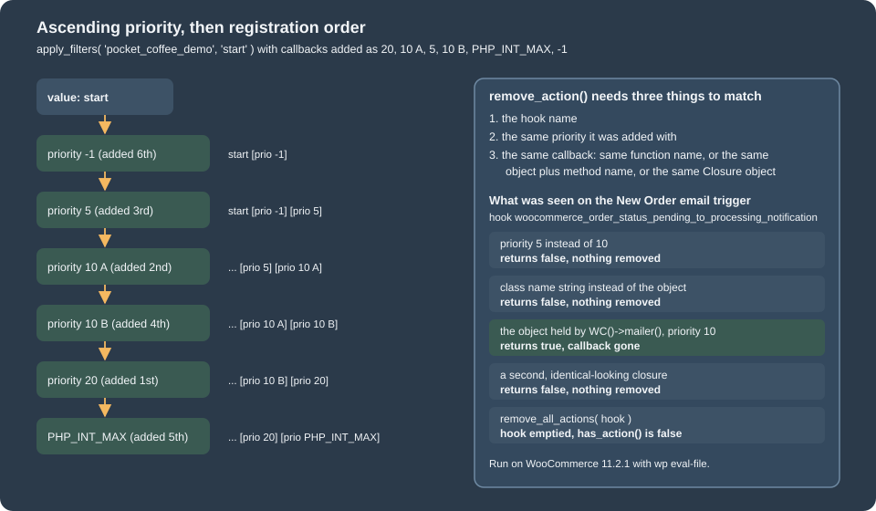
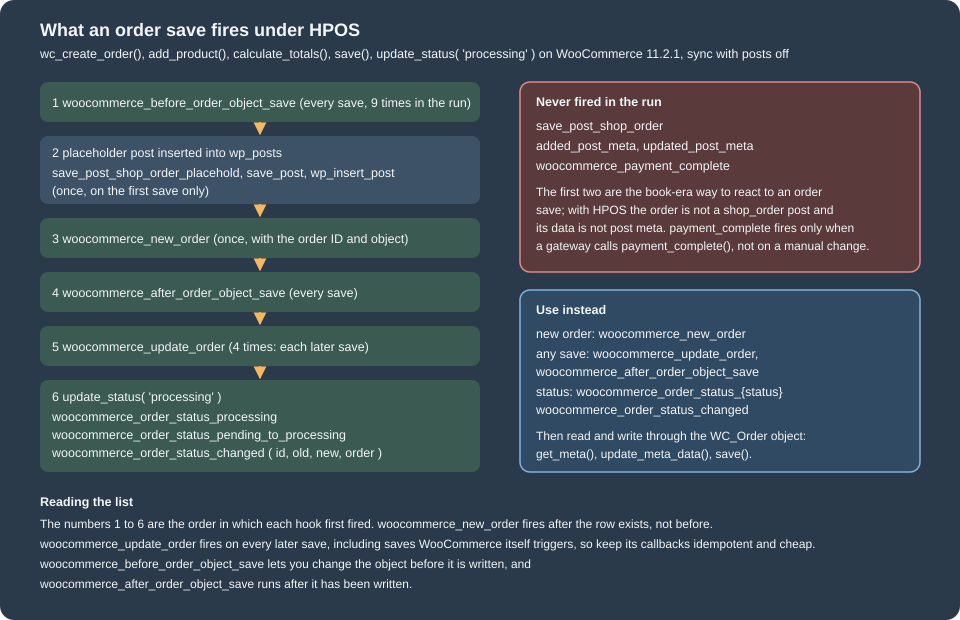
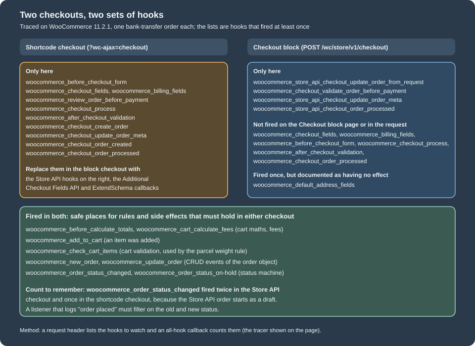

Hooks: Actions and Filters
|
This content was generated with the assistance of AI and should be verified against the official documentation before being relied on in production. |
Hooks are the extension mechanism of WordPress and therefore of WooCommerce. A hook is a named point in the code where other code
may attach a callback: an action announces that something happens and lets callbacks react, a filter hands a value to the
callbacks and uses what comes back. WooCommerce defines a very large number of them, listed in its code reference. A customisation is almost always one add_action()
or one add_filter(), and almost every customisation problem is one of four things: the callback runs at the wrong priority, it
cannot be removed, the hook does not fire where the developer assumed, or the hook was written for a part of WooCommerce that
has since moved to blocks. This page covers the four, in that order. The WordPress hook system itself, independent of
WooCommerce, is covered in depth in Hooks: Actions and Filters.
The page was written against WooCommerce 11.2.1 (the stable release of 2026-10-09; 11.3.0-beta.1 followed on 2026-10-26) on
WordPress 7.1.3 and PHP 8.3.36, and checked on 2026-10-27. Hooks are plain PHP and behave the same on every plan and hosting
type that lets you run a plugin; where a host does not allow plugins, only the code that the host’s own tools accept is possible,
and the WooCommerce documentation recommends a snippets plugin over editing a theme’s functions.php. The page assumes the bootstrap order of the
architecture page: plugin code attaches its hooks from woocommerce_loaded or
woocommerce_init, never at include time.
The running example is Pocket Coffee. The plugin pocket-coffee-hooks, whose complete source is shown in pieces below, gives the
shop a roast date badge on the product page, an order-placed log that writes one line to the WooCommerce log whatever checkout
created the order, a parcel weight rule that holds in both checkouts, a hook tracer for debugging, and the shop recipes that the
2015 books explain with the hooks of their time. Everything on the page ran on the lab store; the last section lists what did not.
Actions and filters in one page
An action is declared with do_action( 'name', ...$args ) and received by callbacks added with add_action(); the return value of
a callback is ignored. A filter is declared with apply_filters( 'name', $value, ...$args ) and received by callbacks added with
add_filter(); each callback receives the value the previous one returned and must return a value, otherwise the next callback
(and the caller) receives null. The two functions are the same underneath, add_action() calls add_filter(), and both store
into the global $wp_filter, an array of WP_Hook objects keyed by hook name; the difference is a convention that tells the
reader whether the return value matters.
| Function | What it does |
|---|---|
|
Attaches a callback. |
|
Detaches a callback. It matches on the hook name, the callback and the priority, and returns |
|
Detaches every callback of a hook, or of one priority. A blunt tool that also removes the callbacks of other plugins. |
|
Without a callback: whether anything is attached (a boolean). With a callback: the priority it was added with, or |
|
How many times the hook has fired in this request. The counter rises when the hook starts, before its callbacks run. |
|
Whether a hook (or any hook) is running now, and which one. Hooks nest, and |
|
The same as the plain functions with the arguments in an array, used to pass an object by reference. |
|
Fire a hook under its old name for compatibility and report it as deprecated, which is how WooCommerce keeps the hook names of 2.x working. |
A callback may be a function name, a closure, an array of an object and a method name, or an array of a class name and a static
method name. The form matters twice: it decides whether the callback can be removed later, and it decides the arguments, as shown
below. The signature of a callback is not checked: PHP only complains when the callback requires more arguments than the hook is
allowed to pass, so a missing $accepted_args shows up as an ArgumentCountError for required parameters or as a silent null
for optional ones.
Priorities and order
Callbacks of one hook run in ascending order of priority, 10 by default. Callbacks with the same priority run in the order they
were added. Negative numbers are allowed; PHP_INT_MAX is the conventional "after everybody else". There are no other rules, and
no priority is reserved for anyone. The script below adds six callbacks to a hook of the shop in a deliberately scrambled order,
and then does the same to a real WooCommerce filter.
<?php
// Filters run in ascending priority; callbacks with the same priority run in the order they were added.
$tag = static function ( $label ) {
return static function ( $html ) use ( $label ) {
return $html . ' [' . $label . ']';
};
};
// Added in this order on purpose: 20, 10 (A), 5, 10 (B), PHP_INT_MAX, -1.
add_filter( 'pocket_coffee_demo', $tag( 'prio 20' ), 20 );
add_filter( 'pocket_coffee_demo', $tag( 'prio 10 A' ), 10 );
add_filter( 'pocket_coffee_demo', $tag( 'prio 5' ), 5 );
add_filter( 'pocket_coffee_demo', $tag( 'prio 10 B' ), 10 );
add_filter( 'pocket_coffee_demo', $tag( 'prio PHP_INT_MAX' ), PHP_INT_MAX );
add_filter( 'pocket_coffee_demo', $tag( 'prio -1' ), -1 );
echo apply_filters( 'pocket_coffee_demo', 'start' ), "\n";
// The same rule on a real WooCommerce filter: strip tags to see the order.
add_filter( 'woocommerce_get_price_html', static fn( $html ) => wp_strip_all_tags( $html ), 5 );
add_filter( 'woocommerce_get_price_html', static fn( $html ) => $html . ' (inc. VAT)', 30 );
echo wc_get_product( 117 )->get_price_html(), "\n";
// Arguments: the third parameter says how many arguments the callback receives.
add_filter(
'woocommerce_get_price_html',
static function ( $html, $product ) {
return $html . ' [' . $product->get_sku() . ']';
},
40,
2
);
echo wc_get_product( 117 )->get_price_html(), "\n";Run with wp eval-file, the script printed:
start [prio -1] [prio 5] [prio 10 A] [prio 10 B] [prio 20] [prio PHP_INT_MAX]
€10.00 Original price was: €10.00.€8.00Current price is: €8.00. <small class="pocket-coffee-saving">Save €2.00</small> (inc. VAT)
€10.00 Original price was: €10.00.€8.00Current price is: €8.00. <small class="pocket-coffee-saving">Save €2.00</small> (inc. VAT) [PC-HOOKS-TMP]The first line is the whole rule: -1, 5, then the two callbacks at 10 in the order they were added (A before B), then 20, then
PHP_INT_MAX. The next two lines are the same rule on woocommerce_get_price_html, with the strip-tags callback at priority 5
running before the Pocket Coffee saving text (priority 20 from the recipes of this page), the VAT note (30) and the SKU note (40,
which asked for two arguments and received the product as the second). The extra "Save" text is there because the plugin of this
page was active during the run.

Priorities are the main source of conflicts between plugins: two callbacks that both wrap the same filter at the default 10 run in load order, which is alphabetical by plugin folder. The rules that follow from the model are these:
-
Use the default priority for a callback that does not care. Choose an explicit priority only to be before or after a known callback, and say why in a comment.
-
To change what another callback produced, run after it (a higher number). To prevent a callback from seeing a value, run before it (a lower number), or remove it.
-
Do not use
PHP_INT_MAXas a habit. Two plugins that both use it are back to load order, and the one that needs to be last for a real reason then has no room. -
The priorities of the callbacks WooCommerce attaches are public in the sense that they are listed in the source and in the code reference, but they are not promises. The classic single product page is the best-known skeleton: the title at 5, the rating and the price at 10, the excerpt at 20, add to cart at 30, the meta at 40 and the sharing links at 50 on
woocommerce_single_product_summary. A callback at priority 25 lands between the excerpt and the add-to-cart form, which is where the roast date badge of the example goes.
The skeleton can be read from the running store, which is also how to check a priority before relying on it. The listing below comes from the function defined in the next section, called for this hook. The badge callback of the example plugin sits at 25, and the lines of other plugins on the lab store are left out:
woocommerce_single_product_summary
5 args=1 woocommerce_template_single_title woocommerce/includes/wc-template-functions.php
10 args=1 woocommerce_template_single_rating woocommerce/includes/wc-template-functions.php
10 args=1 woocommerce_template_single_price woocommerce/includes/wc-template-functions.php
20 args=1 woocommerce_template_single_excerpt woocommerce/includes/wc-template-functions.php
25 args=1 PocketCoffee\Hooks\Roast_Date->echo_badge pocket-coffee-hooks/includes/class-roast-date.php
30 args=1 woocommerce_template_single_add_to_cart woocommerce/includes/wc-template-functions.php
40 args=1 woocommerce_template_single_meta woocommerce/includes/wc-template-functions.php
50 args=1 woocommerce_template_single_sharing woocommerce/includes/wc-template-functions.php
60 args=1 WC_Structured_Data->generate_product_data woocommerce/includes/class-wc-structured-data.phpFinding out what is attached
The tool for every hook question is the global $wp_filter. The script below prints every callback of a hook with its
priority, the number of arguments it accepts, its name and the file it comes from.
<?php
// Lists every callback attached to a hook, with priority, accepted arguments and origin.
function pc_who_hooked( $hook ) {
global $wp_filter;
if ( empty( $wp_filter[ $hook ] ) ) {
echo "$hook: nothing attached\n";
return;
}
echo "$hook\n";
foreach ( $wp_filter[ $hook ]->callbacks as $priority => $callbacks ) {
foreach ( $callbacks as $callback ) {
$function = $callback['function'];
if ( is_array( $function ) ) {
$name = ( is_object( $function[0] ) ? get_class( $function[0] ) . '->' : $function[0] . '::' ) . $function[1];
$file = ( new ReflectionMethod( $function[0], $function[1] ) )->getFileName();
} elseif ( $function instanceof Closure ) {
$reflection = new ReflectionFunction( $function );
$name = 'Closure';
$file = $reflection->getFileName() . ':' . $reflection->getStartLine();
} else {
$name = $function;
$file = ( new ReflectionFunction( $function ) )->getFileName();
}
printf( " %5d args=%d %-70s %s\n", $priority, $callback['accepted_args'], $name, str_replace( WP_PLUGIN_DIR . '/', '', $file ) );
}
}
}
pc_who_hooked( 'woocommerce_new_order' );
pc_who_hooked( 'woocommerce_order_status_changed' );
pc_who_hooked( 'woocommerce_checkout_order_processed' );On 11.2.1 the three hooks printed this (the lines of other plugins on the lab store are omitted):
woocommerce_new_order
2 args=10 Closure woocommerce/src/Internal/Orders/OrderAttributionController.php:216
10 args=2 Automattic\WooCommerce\Caches\OrderCountCacheService->update_on_new_order woocommerce/src/Caches/OrderCountCacheService.php
10 args=0 Automattic\WooCommerce\Internal\Admin\OrderMilestoneEasterEgg->clear_milestone_cache woocommerce/src/Internal/Admin/OrderMilestoneEasterEgg.php
10 args=1 WC_Webhook->process woocommerce/includes/class-wc-webhook.php
100 args=1 Automattic\WooCommerce\Internal\DataStores\Orders\DataSynchronizer->handle_updated_order woocommerce/src/Internal/DataStores/Orders/DataSynchronizer.php
woocommerce_order_status_changed
10 args=4 Automattic\WooCommerce\Caches\OrderCountCacheService->update_on_order_status_changed woocommerce/src/Caches/OrderCountCacheService.php
10 args=4 PocketCoffee\Hooks\Order_Logger->on_status_changed pocket-coffee-hooks/includes/class-order-logger.php
woocommerce_checkout_order_processed: nothing attachedThree things are visible. WooCommerce’s own listeners are ordinary callbacks: the OrderCountCacheService and the HPOS
DataSynchronizer (at priority 100, so that it runs after everybody else has changed the order) are on woocommerce_new_order
beside the logger of this page on woocommerce_order_status_changed. The closure at priority 2 is the order attribution
controller’s; a closure has no name, so nothing outside that class can remove it. And woocommerce_checkout_order_processed had
nothing attached when the script ran: the shortcode checkout fires it, but nobody listened on this store, which is a reminder that
a hook that fires is not necessarily one that is used.
The other runtime questions have their own functions, and one script answers them:
<?php
// Questions you can ask about hooks at runtime.
echo 'did woocommerce_init run: ', did_action( 'woocommerce_init' ), " time(s)\n";
echo 'did woocommerce_loaded run: ', did_action( 'woocommerce_loaded' ), " time(s)\n";
echo 'is anything on woocommerce_new_order: ', var_export( has_action( 'woocommerce_new_order' ), true ), "\n";
echo 'priority of the logger callback: ', var_export( has_action( 'woocommerce_order_status_changed', array( new PocketCoffee\Hooks\Order_Logger(), 'on_status_changed' ) ), true ), " (a new object is a different callback)\n";
echo 'cart-fee hook has callbacks: ', var_export( has_action( 'woocommerce_cart_calculate_fees' ) !== false, true ), "\n";
add_action(
'woocommerce_new_order',
static function () {
echo 'inside woocommerce_new_order: current_action()=', current_action(), ' doing_action=', var_export( doing_action( 'woocommerce_new_order' ), true ), ' nesting=', json_encode( $GLOBALS['wp_current_filter'] ), "\n";
},
99
);
$order = wc_create_order( array( 'status' => 'pending' ) );
$order->save();
echo 'new_order fired: ', did_action( 'woocommerce_new_order' ), " time(s)\n";
$order->delete( true );did woocommerce_init run: 1 time(s)
did woocommerce_loaded run: 1 time(s)
is anything on woocommerce_new_order: true
priority of the logger callback: false (a new object is a different callback)
cart-fee hook has callbacks: true
inside woocommerce_new_order: current_action()=woocommerce_new_order doing_action=true nesting=["woocommerce_new_order"]
new_order fired: 1 time(s)did_action() counts, has_action() with a callback returns the priority or false (it printed false for the logger because the
script built a new object, and a new object is a different callback), and current_action() and doing_action() identify the hook
that is running, with wp_current_filter as the stack. The code reference at
https://woocommerce.github.io/code-reference/hooks/hooks.html lists every hook with its parameters and the version that added it,
which is the way to find the hook for a task before reading source.
Removing and replacing callbacks
remove_action() and remove_filter() succeed only when the hook, the priority and the callback are the ones that were added.
WooCommerce attaches the callbacks of its transactional emails from the constructors of the email objects, so the
New Order email is a good subject: its trigger method is attached to the notification hook of every status change that creates
a new order. The script tries five removals and prints what is left after each.
<?php
// Five ways remove_action() succeeds or silently fails.
$hook = 'woocommerce_order_status_pending_to_processing_notification';
$show = static function ( $label ) use ( $hook ) {
global $wp_filter;
$names = array();
foreach ( $wp_filter[ $hook ]->callbacks ?? array() as $priority => $callbacks ) {
foreach ( $callbacks as $callback ) {
$function = $callback['function'];
$names[] = $priority . ':' . ( is_array( $function ) ? ( is_object( $function[0] ) ? get_class( $function[0] ) : $function[0] ) . '::' . $function[1] : 'Closure' );
}
}
printf( "%-34s %s\n", $label, implode( ' | ', $names ) );
};
$show( 'registered by WooCommerce' );
$email = WC()->mailer()->emails['WC_Email_New_Order'];
// 1. Same callback, wrong priority: returns false and changes nothing.
var_dump( remove_action( $hook, array( $email, 'trigger' ), 5 ) );
$show( 'after wrong priority (5)' );
// 2. The class name instead of the object is a different callback: also false.
var_dump( remove_action( $hook, array( 'WC_Email_New_Order', 'trigger' ), 10 ) );
$show( 'after using the class name' );
// 3. The exact object and priority: true.
var_dump( remove_action( $hook, array( $email, 'trigger' ), 10 ) );
$show( 'after exact object and priority' );
// 4. A closure cannot be removed by anyone who does not hold the same Closure object.
add_action( $hook, static function () {}, 10 );
var_dump( remove_action( $hook, static function () {}, 10 ) );
$show( 'after trying to remove a closure' );
// 5. The blunt tool: every callback at one priority, or the whole hook.
remove_all_actions( $hook );
$show( 'after remove_all_actions' );
var_dump( has_action( $hook ) );registered by WooCommerce 10:WC_Email_New_Order::trigger | 10:WC_Email_Customer_Processing_Order::trigger
bool(false)
after wrong priority (5) 10:WC_Email_New_Order::trigger | 10:WC_Email_Customer_Processing_Order::trigger
bool(false)
after using the class name 10:WC_Email_New_Order::trigger | 10:WC_Email_Customer_Processing_Order::trigger
bool(true)
after exact object and priority 10:WC_Email_Customer_Processing_Order::trigger
bool(false)
after trying to remove a closure 10:WC_Email_Customer_Processing_Order::trigger | 10:Closure
after remove_all_actions
bool(false)Reading the output step by step:
-
A wrong priority returns
falseand changes nothing. The priority is part of the identity, so it must be the one in theadd_action()call (it is in the source, or in the output ofwho_hookedabove). -
The class name in place of the object returns
false.array( 'WC_Email_New_Order', 'trigger' )andarray( $email, 'trigger' )are different callbacks for WordPress, and the second form is the one WooCommerce used. -
The exact object and priority returns
trueand the callback is gone. The object is available because the mailer keeps its email objects (WC()->mailer()->emails), which is a public property of a public class; a hook attached by anInternalservice is not reachable in that way without the container. -
A closure cannot be removed by anyone who does not hold the same
Closureobject. Writing the same code a second time creates a different object, andremove_action()returnsfalse. A plugin that expects others to unhook its callbacks should use a named function or a method of a retrievable object. -
remove_all_actions()empties the hook, including the callbacks of other plugins and the closure added in step 4, which is why it belongs in tests and emergencies, not in plugins.
A trap worth knowing: a new WC_Email_New_Order() registers its own hooks in its constructor, so a script that builds a second
object to try removing the first removes the new object’s own callback and reports true, while the original keeps running. It is
the reason the example uses the object from the mailer.
When the object is not available but the class and method are known, the callback can be found by scanning the hook’s priority list. The helper below is the well-known workaround; it works only after the hook has been populated and it depends on the class name, so it breaks when the class is renamed.
<?php
/**
* Removes every callback of a hook that is a method of an object of the given class.
*
* WordPress can only remove a callback when it receives the exact object, so this walks the hook's
* priority list and matches the class name instead. Call it after the hook was registered.
*
* @param string $hook Hook name.
* @param string $class Class of the object whose method was hooked.
* @param string $method Method name.
* @param int $priority Priority the callback was added with.
* @return int Number of callbacks removed.
*/
function pocket_coffee_remove_object_callback( $hook, $class, $method, $priority = 10 ) {
global $wp_filter;
if ( empty( $wp_filter[ $hook ]->callbacks[ $priority ] ) ) {
return 0;
}
$removed = 0;
foreach ( $wp_filter[ $hook ]->callbacks[ $priority ] as $callback ) {
$function = $callback['function'];
if ( is_array( $function ) && is_object( $function[0] ) && get_class( $function[0] ) === $class && $function[1] === $method ) {
remove_filter( $hook, $function, $priority );
++$removed;
}
}
return $removed;
}
$hook = 'woocommerce_order_status_pending_to_processing_notification';
echo 'before: ', count( $GLOBALS['wp_filter'][ $hook ]->callbacks[10] ), " callbacks at priority 10\n";
echo 'removed: ', pocket_coffee_remove_object_callback( $hook, 'WC_Email_New_Order', 'trigger', 10 ), "\n";
echo 'after: ', count( $GLOBALS['wp_filter'][ $hook ]->callbacks[10] ), " callbacks at priority 10\n";before: 2 callbacks at priority 10
removed: 1
after: 1 callbacks at priority 10The same applies to every callback that WooCommerce attaches from the template files. The default output of the classic single
product page is the list of callbacks above, so remove_action( 'woocommerce_single_product_summary', 'woocommerce_template_single_title', 5 )
removes the title in a classic theme, and a remove_action() followed by an add_action() with the same priority replaces it. That
works because those callbacks are plain functions attached in includes/wc-template-hooks.php while the frontend files are
loaded. In a block theme WooCommerce removes the default callbacks of the classic summary itself (the source lists them), as the
section on blocks explains, so removing them yourself changes nothing.
When to remove
A callback can only be removed after it has been added and before the hook fires. The classic template callbacks are added while
includes/ loads (wc-template-hooks.php), so they exist from woocommerce_loaded onward and init is the usual place to
remove them. Callbacks that a service attaches from its own init handler (most of the src/ classes, see the listing on the
architecture page) exist only after that handler ran, so remove them at init with a priority later than the service’s, or from
the hook that is about to fire. The classic mistake is to call remove_action() straight from the plugin file: it works
or fails depending on whether the plugin’s folder name sorts before or after woocommerce, which is the kind of bug that
disappears on the developer’s machine and returns in production.
<?php
// Fragile: runs while the plugin file is included. It works when the plugin folder sorts after
// "woocommerce" and silently does nothing when it sorts before (as "pocket-coffee-hooks" does).
remove_action( 'woocommerce_single_product_summary', 'woocommerce_template_single_sharing', 50 );
// Robust: wait until WooCommerce has attached its callbacks, and until the hook has not fired yet.
add_action(
'init',
static function () {
remove_action( 'woocommerce_single_product_summary', 'woocommerce_template_single_sharing', 50 );
},
20
);The email callbacks have a hook of their own for this job. WooCommerce fires woocommerce_email with the mailer as soon as the
email objects exist, and the official snippet for removing emails removes them from there. On 11.2.1 did_action( 'woocommerce_email' )
was already 1 when a WP-CLI script began, so a callback attached to it from init or later never runs: attach it from the plugin
file or woocommerce_loaded.
<?php
add_action(
'woocommerce_email',
static function ( $mailer ) {
remove_action( 'woocommerce_order_status_pending_to_processing_notification', array( $mailer->emails['WC_Email_New_Order'], 'trigger' ) );
remove_action( 'woocommerce_order_status_pending_to_on-hold_notification', array( $mailer->emails['WC_Email_New_Order'], 'trigger' ) );
}
);Hooks in WooCommerce
Names and families
WooCommerce hook names are prefixed woocommerce_ (the older wc_ prefix exists for a few admin and utility hooks) and fall into
families. Knowing the family tells where to look:
| Family | Examples | Notes |
|---|---|---|
Plugin lifecycle |
|
Fired once per request or per install. The first three are described on the architecture page. |
CRUD events of an object |
|
Fired by the data layer when an object is stored, whatever started the save: admin, checkout, REST, CLI, import. The best place to react to a change. |
Property getters |
|
Filters built as a prefix plus the property name: |
Status machine |
|
Fired in that order when an order’s status changes. |
Cart and totals |
|
Fired by the cart code and by the Store API, so they hold in both checkouts. |
Template hooks |
|
Fired from the files in |
Checkout process |
|
Two sets for two checkouts. |
Emails and notifications |
|
Described on the emails page. |
Settings and admin |
|
See the settings page. |
Deprecated aliases |
|
Kept alive by |
The conventions WooCommerce asks of its own hooks
The contribution guide that describes how WooCommerce adds hooks doubles as a guide to reading them, and it is a good template
for the hooks an extension offers to other plugins. In short: prefer an existing hook to a new one, because every hook is a
long-term obligation; use lifecycle hooks in before and after pairs and always as actions, the "before" one passing the
arguments of the process and the "after" one the result; use an escape hook (a filter whose initial value is null and whose
non-null value short-circuits the code) when a function must be replaceable; filter both the arguments and the result of global
rendering functions only where no better way exists; pass objects rather than IDs; do not tie a lifecycle hook to one way of
reaching the code (an order is created by checkout, REST, admin and import, so the hook belongs to the creation, not to the
screen); do not use a filter as a feature flag; do not place filters inside templates and data stores; and avoid enumeration
values inside hook names (WooCommerce itself uses woocommerce_order_status_{status} because order statuses are an open set).
The roast date class of the example plugin offers an escape hook and a result filter in exactly that style. Its register()
method chooses between the classic action and a block filter, which the section on blocks explains:
<?php
/**
* Roast date badge.
*
* @package PocketCoffee\Hooks
*/
namespace PocketCoffee\Hooks;
defined( 'ABSPATH' ) || exit;
/**
* Shows the roast date of a product, stored in the "_pocket_coffee_roast_date" meta key.
*/
final class Roast_Date {
const META_KEY = '_pocket_coffee_roast_date';
/**
* Attaches the hook for the chosen rendering path.
*
* The two paths are alternatives. Attach both and a block theme shows the badge twice, because
* WooCommerce also runs the classic single-product hooks inside its block templates.
*/
public function register() {
if ( 'block' === get_option( 'pocket_coffee_roast_mode', 'action' ) ) {
// WordPress lets any plugin filter the HTML of one block type.
add_filter( 'render_block_woocommerce/product-price', array( $this, 'append_badge_to_price_block' ), 10, 3 );
return;
}
// Classic templates fire this action inside single-product.php; block themes get it from a compatibility layer.
add_action( 'woocommerce_single_product_summary', array( $this, 'echo_badge' ), 25 );
}
/**
* Prints the badge for the product in the classic loop.
*/
public function echo_badge() {
global $product;
echo wp_kses_post( $this->badge_html( $product ) );
}
/**
* Appends the badge to the HTML of the Product Price block.
*
* @param string $block_content Rendered block HTML.
* @param array $parsed_block Parsed block.
* @param \WP_Block $block Block instance, whose context carries the post ID.
* @return string
*/
public function append_badge_to_price_block( $block_content, $parsed_block, $block ) {
$post_id = isset( $block->context['postId'] ) ? (int) $block->context['postId'] : 0;
return $block_content . $this->badge_html( $post_id ? wc_get_product( $post_id ) : null );
}
/**
* Builds the badge HTML, or an empty string when the product has no roast date.
*
* Two hooks follow the conventions WooCommerce asks of its own code: an escape hook that starts
* with "pre_" and whose initial value is null, and a filter on the finished HTML that receives
* the product object rather than its ID.
*
* @param \WC_Product|false|null $product Product.
* @return string
*/
private function badge_html( $product ) {
if ( ! $product instanceof \WC_Product ) {
return '';
}
/**
* Short-circuits the roast date badge: return a string (even an empty one) to replace it.
*
* @since 0.1.0
*
* @param string|null $pre Null to build the badge, a string to use instead.
* @param \WC_Product $product Product the badge is for.
*/
$pre = apply_filters( 'pre_pocket_coffee_roast_badge', null, $product );
if ( null !== $pre ) {
return (string) $pre;
}
$date = $product->get_meta( self::META_KEY );
if ( ! $date ) {
return '';
}
/* translators: %s: roast date */
$html = '<p class="pocket-coffee-roast-date">' . esc_html( sprintf( __( 'Roasted on %s', 'pocket-coffee-hooks' ), $date ) ) . '</p>';
/**
* Filters the HTML of the roast date badge.
*
* @since 0.1.0
*
* @param string $html Badge HTML.
* @param \WC_Product $product Product the badge is for.
*/
return (string) apply_filters( 'pocket_coffee_roast_badge_html', $html, $product );
}
}Other plugins can now change the badge without editing it, and the lab run proves both entry points:
<?php
// Exercises the two hooks the roast date badge offers to other plugins.
$GLOBALS['product'] = wc_get_product( 117 );
$badge = new PocketCoffee\Hooks\Roast_Date();
$show = static function ( $label ) use ( $badge ) {
ob_start();
$badge->echo_badge();
printf( "%-34s %s\n", $label, ob_get_clean() ?: '(nothing printed)' );
};
$show( 'default' );
add_filter(
'pocket_coffee_roast_badge_html',
static fn( $html, $product ) => str_replace( 'Roasted on', 'Fresh from the roaster on', $html ),
10,
2
);
$show( 'with the html filter' );
add_filter( 'pre_pocket_coffee_roast_badge', '__return_empty_string' );
$show( 'with the escape hook returning ""' );default <p class="pocket-coffee-roast-date">Roasted on 2026-10-20</p>
with the html filter <p class="pocket-coffee-roast-date">Fresh from the roaster on 2026-10-20</p>
with the escape hook returning "" (nothing printed)Deprecated hook names
WooCommerce renames hooks and keeps the old names working through two handler objects created in WooCommerce::init():
WC_Deprecated_Action_Hooks and WC_Deprecated_Filter_Hooks. Each holds a map from the new name to the old names and the version
that deprecated them. When something is attached to an old name, the handler fires it with the arguments of the new hook and
reports a deprecation. This is what keeps code from the 2015 books alive, with a warning:
<?php
// A book-era callback on a renamed hook still runs, and WordPress reports the old name.
add_action(
'woocommerce_order_add_shipping',
function ( $order_id, $item_id ) {
echo "old hook woocommerce_order_add_shipping fired for order $order_id, item $item_id\n";
},
10,
2
);
add_action(
'woocommerce_new_order_item',
function ( $item_id, $item, $order_id ) {
echo "new hook woocommerce_new_order_item fired for ", get_class( $item ), " $item_id in order $order_id\n";
},
10,
3
);
$order = wc_create_order( array( 'status' => 'pending' ) );
$rate = new WC_Order_Item_Shipping();
$rate->set_method_title( 'Flat rate' );
$rate->set_total( '4.50' );
$order->add_item( $rate );
$order->save();
$order->delete( true );Run with WP_DEBUG and WP_DEBUG_DISPLAY on, the callbacks of both names ran and WordPress printed the notice:
old hook woocommerce_order_add_shipping fired for order 406, item 250
new hook woocommerce_new_order_item fired for WC_Order_Item_Shipping 250 in order 406
Deprecated: Hook woocommerce_order_add_shipping is <strong>deprecated</strong> since version 3.0.0! Use woocommerce_new_order_item instead. in /var/www/html/wp-includes/functions.php on line 6260The warning names the replacement. A log of these notices is the cheapest migration checklist for an old plugin: run its workflows with debugging on and replace every hook it names. The two maps hold about sixty aliases: fifty dated 3.0.0, eight dated 3.4.0, one 2.6.0 and one 6.5.0. A hook that was removed without an alias simply never fires.
Order and product hooks, and HPOS
Orders are the objects whose hooks changed most. In the books an order is a post of type shop_order and the natural way to
react to it is a post hook (save_post_shop_order, added_post_meta). With HPOS (High-Performance Order Storage), the default
for new stores since WooCommerce 8.2, the order is a row in wp_wc_orders and the post hooks do not fire for it. The script below
creates an order, saves it, moves it to processing and prints each hook that fired, in first-fired order, with how many times.
<?php
// Shows which order hooks fire, and in which order, while one order is created, saved and moved to "processing".
$watch = array(
'woocommerce_before_order_object_save',
'woocommerce_new_order',
'woocommerce_after_order_object_save',
'woocommerce_update_order',
'woocommerce_order_status_changed',
'woocommerce_order_status_pending_to_processing',
'woocommerce_order_status_processing',
'woocommerce_payment_complete',
'save_post_shop_order',
'save_post_shop_order_placehold',
'save_post',
'wp_insert_post',
'added_post_meta',
'updated_post_meta',
);
$seen = array();
add_action(
'all',
function ( $hook ) use ( &$seen, $watch ) {
if ( in_array( $hook, $watch, true ) ) {
$seen[] = $hook;
}
}
);
$order = wc_create_order( array( 'status' => 'pending' ) );
$order->add_product( wc_get_product( 117 ), 1 );
$order->set_billing_email( 'ada@example.test' );
$order->calculate_totals();
$order->save();
$order->update_status( 'processing' );
foreach ( array_count_values( $seen ) as $hook => $count ) {
printf( "%-48s x%d\n", $hook, $count );
}
$missing = array_diff( $watch, $seen );
echo 'never fired: ', implode( ', ', $missing ), "\n";
$order->delete( true );woocommerce_before_order_object_save x9
save_post_shop_order_placehold x1
save_post x1
wp_insert_post x1
woocommerce_new_order x1
woocommerce_after_order_object_save x9
woocommerce_update_order x4
woocommerce_order_status_processing x1
woocommerce_order_status_pending_to_processing x1
woocommerce_order_status_changed x1
never fired: woocommerce_payment_complete, save_post_shop_order, added_post_meta, updated_post_metaThe hooks that did not fire are as informative as those that did: save_post_shop_order, added_post_meta and
updated_post_meta never ran, because the order data is not in wp_posts or wp_postmeta. The placeholder post that reserves
the ID is the only post operation (save_post_shop_order_placehold, save_post, wp_insert_post), and a plugin must not rely on
it: it only reserves the ID. The figure orders the hooks of one save.

Three rules come out of the run:
-
React to an order with
woocommerce_new_order(it carries the order ID and the object),woocommerce_update_order,woocommerce_after_order_object_saveor a status hook, not with a post hook. -
Read and write through the object:
$order->get_meta( '_key' ),$order->update_meta_data( '_key', $value ),$order->save().get_post_meta()on an order ID reads nothing under HPOS. -
Keep callbacks on update hooks cheap and idempotent.
woocommerce_update_orderfired four times for one logical change andwoocommerce_before_order_object_savenine times; code that sends an email or calls an API on those hooks will repeat the work.
The status machine is the right place for "an order was placed" logic, and the placing of an order is where the two checkouts disagree most, which leads to the next sections.
Classic hooks and the Cart and Checkout blocks
Since WooCommerce 8.3 new stores use the Cart and Checkout blocks; upgraded stores keep the shortcode pages until the merchant
switches. The two checkouts build the same order with different code, and most of the classic template and checkout hooks of the
books are fired only by the shortcode version. The official page Hook alternatives was produced by logging every do_action and
apply_filters of both versions and marking each classic hook as fully supported, partially supported or not supported in the
blocks. The lab confirmed the page’s findings with a tracer, described below. The flowchart is the decision procedure that the rest
of the section justifies; its first question separates data from markup, because data hooks hold everywhere and markup hooks hold
only where PHP renders the page.
The tracer
A tracer is the quickest way to answer "does this hook run here". The class below attaches to the special all hook only when the
request carries an X-PC-Trace header with a comma-separated list of exact hook names, counts the ones that fire and appends one
JSON line per request to a file in the uploads directory. It costs nothing on a normal request, and it is not safe to leave on a
public site, which is why it needs the header, so it belongs in a development plugin.
<?php
/**
* Request hook tracer.
*
* @package PocketCoffee\Hooks
*/
namespace PocketCoffee\Hooks;
defined( 'ABSPATH' ) || exit;
/**
* Records which of the named hooks fired during one request, in first-fired order.
*
* It only runs when the request carries an "X-PC-Trace" header holding a comma-separated list
* of exact hook names, so it costs nothing on normal requests.
*/
final class Hook_Tracer {
/**
* Hook names to watch, as a map name => number of times fired.
*
* @var int[]
*/
private $fired = array();
/**
* Names requested through the header.
*
* @var string[]
*/
private $watch = array();
/**
* Attaches the "all" hook when the request asks for a trace.
*/
public function register() {
$header = isset( $_SERVER['HTTP_X_PC_TRACE'] ) ? sanitize_text_field( wp_unslash( $_SERVER['HTTP_X_PC_TRACE'] ) ) : '';
if ( '' === $header ) {
return;
}
$this->watch = array_filter( array_map( 'trim', explode( ',', $header ) ) );
add_action( 'all', array( $this, 'on_any_hook' ) );
add_action( 'shutdown', array( $this, 'write' ), PHP_INT_MAX );
}
/**
* Counts a hook when it is one of the watched names.
*
* @param string $hook_name Name of the hook that is firing.
*/
public function on_any_hook( $hook_name ) {
if ( in_array( $hook_name, $this->watch, true ) ) {
$this->fired[ $hook_name ] = ( $this->fired[ $hook_name ] ?? 0 ) + 1;
}
}
/**
* Appends one JSON line per request to a file in the uploads directory.
*/
public function write() {
$uploads = wp_upload_dir();
$line = wp_json_encode(
array(
'uri' => isset( $_SERVER['REQUEST_URI'] ) ? sanitize_text_field( wp_unslash( $_SERVER['REQUEST_URI'] ) ) : '',
'fired' => $this->fired,
)
);
file_put_contents( trailingslashit( $uploads['basedir'] ) . 'pocket-coffee-hook-trace.jsonl', $line . "\n", FILE_APPEND ); // phpcs:ignore WordPress.WP.AlternativeFunctions.file_system_operations_file_put_contents
}
}Two small scripts drove the lab store: one adds a sample product to a cart, loads a page with the [woocommerce_checkout]
shortcode and posts the checkout form to ?wc-ajax=checkout, and the other talks to POST /wc/store/v1/checkout with a cart
token and a nonce, as the Checkout block does. Both sent the same header with 26 hook names (the table lists the ones that fired). The shortcode checkout placed
order 170 (bank transfer, on hold) and the Store API checkout placed order 171.
add-to-cart landed on http://localhost:8081/checkout/
checkout result: success http://localhost:8081/checkout/order-received/170/?key=wc_order_xxxxxxxxxxxxx
add-item 201
checkout 200 (171, 'on-hold', 'success')The counts of the hooks, per request, were:
| Hook | Shortcode checkout | Checkout block (Store API) |
|---|---|---|
|
1 each |
0 |
|
1 each in the page, 1 each in the submit |
0 |
|
1 each |
0 |
|
1 each |
0 |
|
0 |
1 each |
|
1 |
1 |
|
4 |
11 |
|
1 |
2 |
|
1 |
1 |
|
yes |
yes |
|
yes |
1 |

The block checkout page itself, loaded with a cart, fired none of the classic checkout hooks except woocommerce_default_address_fields, a
hook the official table lists as having no effect in the blocks. The cart page behaved the same way: woocommerce_before_cart
and its siblings did not fire. The tracer also showed what a block theme keeps. On the product page and the shop archive of the
lab store (a block theme), woocommerce_before_main_content, woocommerce_single_product_summary,
woocommerce_before_single_product_summary, woocommerce_after_single_product_summary, woocommerce_product_meta_start,
woocommerce_before_add_to_cart_form, woocommerce_before_shop_loop and woocommerce_shop_loop_item_title all fired, because
WooCommerce wraps the single product and archive templates in a compatibility layer: SingleProductTemplateCompatibility and
ArchiveProductTemplatesCompatibility in src/Blocks/Templates (with the shared AbstractTemplateCompatibility) inject the
output of the classic hooks around the matching blocks. For the single product template the source lists the default callbacks
(the title at priority 5, the price at 10, the excerpt at 20 and so on) and removes them, because the blocks print those, so only
what other plugins attached is printed. The compatibility layer covers the product and archive templates, not the cart and the
checkout.
What does not work, and what to use
The table pairs the classic hooks of the books with their replacement. The middle column is the status that the official page gives (not supported, partial), with the lab result added where the tracer observed it.
| Classic hook | In the blocks | Use instead |
|---|---|---|
|
Partial: adding fields works through the new API, editing or removing core fields does not. Not fired on the block checkout (lab run). |
The Additional Checkout Fields API, |
|
Not fired (lab run). |
|
|
Not fired (lab run). |
|
|
Not supported: no equivalent hook, because the page is not rendered by PHP templates. |
Slot and Fill ( |
|
Not supported (the cart and the totals are drawn in JavaScript). |
The JavaScript checkout filters registered with |
|
Not supported. |
The |
|
Not supported. |
|
|
Not supported. |
The block editor: edit the text of the Place order button, remove the order notes block, edit the terms. No PHP filter. |
|
Not supported: gateways are drawn by the React component that the gateway registers. |
A block payment method, |
|
Partial: removing a gateway works, but the block needs its own registration. |
Remove it on the server and make sure the block integration agrees. |
|
Not supported. |
Set the values on the customer object ( |
|
Not supported: the page no longer calls these AJAX events. |
The Store API cart and checkout routes; |
The table is a summary of a long page, not a substitute. The official page lists several hundred hooks, marks the place-order and order-summary sections as work in progress, and says that its hook list was produced by logging a store, so a hook missing from it is "unknown", not "supported". Treat the status column as the starting point and run a tracer on your own store.
The hooks that are supported are those of the cart and of the data layer, because both checkouts use the same objects:
woocommerce_cart_calculate_fees, woocommerce_before_calculate_totals, woocommerce_add_to_cart and
woocommerce_check_cart_items, the shipping and totals hooks, woocommerce_product_get_*, and all the CRUD and status hooks.
woocommerce_after_checkout_validation, the hook of PO-box and delivery-area snippets, is a typical casualty; the official snippet
for the block checkout uses woocommerce_checkout_validate_order_before_payment and checks the shipping address when it exists
and the billing address when it does not.
One rule that holds in both: the parcel weight
Pocket Coffee ships in parcels of at most 5 kg. The rule needs to fire in the cart page, in the shortcode checkout and in the
Checkout block, and it should mark each order with the checkout that created it. The class below uses woocommerce_check_cart_items
(fired by both) for the rule, and the two checkout-specific hooks, one per checkout, for the marker.
<?php
/**
* Checkout rules that work in the shortcode checkout and in the Checkout block.
*
* @package PocketCoffee\Hooks
*/
namespace PocketCoffee\Hooks;
defined( 'ABSPATH' ) || exit;
/**
* A parcel limit and a "channel" marker on every order.
*/
final class Checkout_Rules {
const MAX_PARCEL_KG = 5;
/**
* Attaches the hooks.
*/
public function register() {
// Runs for the cart page, the shortcode checkout and the Cart and Checkout blocks.
add_action( 'woocommerce_check_cart_items', array( $this, 'check_parcel_weight' ) );
// The order is built in two different places, so the marker needs two hooks.
add_action( 'woocommerce_checkout_create_order', array( $this, 'mark_classic_order' ), 10, 1 );
add_action( 'woocommerce_store_api_checkout_update_order_from_request', array( $this, 'mark_blocks_order' ), 10, 1 );
}
/**
* Adds an error notice when the cart is heavier than one parcel.
*/
public function check_parcel_weight() {
$weight = (float) WC()->cart->get_cart_contents_weight();
if ( $weight > self::MAX_PARCEL_KG ) {
wc_add_notice(
sprintf(
/* translators: 1: cart weight, 2: maximum weight */
__( 'Your cart weighs %1$s kg. A parcel can hold at most %2$s kg, please split the order.', 'pocket-coffee-hooks' ),
wc_format_decimal( $weight ),
self::MAX_PARCEL_KG
),
'error'
);
}
}
/**
* Stores that the order came from the shortcode checkout.
*
* @param \WC_Order $order Order being built, not saved yet.
*/
public function mark_classic_order( $order ) {
$order->update_meta_data( '_pocket_coffee_channel', 'shortcode-checkout' );
}
/**
* Stores that the order came from the Store API (the Checkout block).
*
* @param \WC_Order $order Order being updated from the request, not saved yet.
*/
public function mark_blocks_order( $order ) {
$order->update_meta_data( '_pocket_coffee_channel', 'store-api' );
}
}With a test product of 6 kg, both checkouts refused to continue. The shortcode checkout replaced the form with the message
"There are some issues with the items in your cart. Please go back to the cart page and resolve these issues before checking
out." and the Store API answered GET /cart with the notice in its errors list and POST /checkout with this:
checkout 409 woocommerce_rest_cart_item_error Your cart weighs 6 kg. A parcel can hold at most 5 kg, please split the order.The marker was read back with the CRUD object. The shortcode order 198 carried _pocket_coffee_channel = shortcode-checkout with
created_via = checkout, and the draft order that a Store API checkout request created carried store-api with created_via
= store-api. The product was returned to 0.25 kg after the test.
An order-placed log that works in both
The "order placed" log of the Pocket Coffee thread cannot use woocommerce_checkout_order_processed (shortcode only) or
woocommerce_store_api_checkout_order_processed (blocks only), and woocommerce_new_order fires for draft orders too. The status
machine fires in both, but it fires more than once, as the table shows (twice on the Store API order). The class below logs the
first move of an order out of the draft and pending states.
<?php
/**
* Order-placed log.
*
* @package PocketCoffee\Hooks
*/
namespace PocketCoffee\Hooks;
defined( 'ABSPATH' ) || exit;
/**
* Writes "order placed" to the WooCommerce log whatever the checkout that created the order.
*/
final class Order_Logger {
/**
* Attaches the hooks.
*/
public function register() {
// Fires for every status change of every order, on any checkout, REST call, admin screen or CLI command.
add_action( 'woocommerce_order_status_changed', array( $this, 'on_status_changed' ), 10, 4 );
}
/**
* Logs the first move of an order out of the "draft" and "pending" states.
*
* @param int $order_id Order ID.
* @param string $old_status Old status, without the "wc-" prefix.
* @param string $new_status New status, without the "wc-" prefix.
* @param \WC_Order $order Order object.
*/
public function on_status_changed( $order_id, $old_status, $new_status, $order ) {
if ( ! in_array( $old_status, array( 'checkout-draft', 'pending' ), true ) || in_array( $new_status, array( 'checkout-draft', 'pending' ), true ) ) {
return;
}
wc_get_logger()->info(
sprintf( 'Order placed: #%s, %s %s, now %s (was %s)', $order->get_order_number(), $order->get_total(), $order->get_currency(), $new_status, $old_status ),
array( 'source' => 'pocket-coffee-hooks' )
);
}
}After the two checkouts of the lab run, the file wp-content/uploads/wc-logs/pocket-coffee-hooks-<date>-<hash>.log held one line per
order (the lines of orders created by other work on the same lab store are left out):
2026-10-27T18:42:52+00:00 INFO Order placed: #170, 12.50 EUR, now on-hold (was pending)
2026-10-27T18:42:57+00:00 INFO Order placed: #171, 12.50 EUR, now on-hold (was pending)Both lines say "was pending": the shortcode order is created pending, and the Store API order moves from its draft to pending before the payment method puts it on hold, so the last move before "placed" is the same. The total of 12.50 is 8.00 for the test product plus 4.50 for the Spain flat rate.
Recipes from the books, rewritten
Rauland’s cookbook of 2015 is a collection of small recipes, and the other two books share some of its topics. Many of the recipes are one-liners that still run; some quietly stopped working with the move to blocks or HPOS; a few were replaced by features. The class below collects the recipes of the cookbook chapters on the shop page, the cart, the checkout, product pages and emails, and rewrites each for WooCommerce 11.2.1. The recipes are re-implemented, not copied: only the topics come from the book. Each was run on the lab store, which uses a block theme.
<?php
/**
* Shop behaviour recipes.
*
* @package PocketCoffee\Hooks
*/
namespace PocketCoffee\Hooks;
defined( 'ABSPATH' ) || exit;
/**
* Small filters that change how the shop behaves.
*/
final class Shop_Recipes {
/**
* Attaches the hooks.
*/
public function register() {
add_filter( 'loop_shop_per_page', array( $this, 'products_per_page' ), 20 );
add_filter( 'woocommerce_add_to_cart_redirect', array( $this, 'go_to_checkout' ) );
add_action( 'template_redirect', array( $this, 'skip_the_cart_page' ) );
add_filter( 'woocommerce_get_price_html', array( $this, 'show_saving' ), 20, 2 );
add_filter( 'woocommerce_email_from_address', array( $this, 'from_address' ) );
add_filter( 'woocommerce_email_from_name', array( $this, 'from_name' ) );
add_action( 'template_redirect', array( $this, 'open_product_found_by_sku' ) );
add_filter( 'woocommerce_get_catalog_ordering_args', array( $this, 'order_by_sku' ), 10, 2 );
add_filter( 'woocommerce_catalog_orderby', array( $this, 'add_sku_sorting_option' ) );
add_filter( 'woocommerce_coupons_enabled', array( $this, 'coupons_for_signed_in_shoppers' ) );
add_filter( 'woocommerce_product_tabs', array( $this, 'tidy_product_tabs' ), 98 );
}
/**
* Number of products per page in the shop archive.
*
* @return int
*/
public function products_per_page() {
return (int) get_option( 'pocket_coffee_per_page', 12 );
}
/**
* Sends the shopper to the checkout after a non-JavaScript add to cart.
*
* @return string
*/
public function go_to_checkout() {
return wc_get_checkout_url();
}
/**
* Redirects the cart page to the checkout when the cart has items and the option allows it.
*/
public function skip_the_cart_page() {
if ( 'yes' === get_option( 'pocket_coffee_skip_cart', 'yes' ) && is_cart() && ! WC()->cart->is_empty() ) {
wp_safe_redirect( wc_get_checkout_url() );
exit;
}
}
/**
* Appends "Save x" to the price of a product on sale.
*
* @param string $price_html Price HTML.
* @param \WC_Product $product Product.
* @return string
*/
public function show_saving( $price_html, $product ) {
if ( ! $product->is_type( 'simple' ) || ! $product->is_on_sale() ) {
return $price_html;
}
$saving = (float) $product->get_regular_price() - (float) $product->get_sale_price();
/* translators: %s: formatted amount saved */
return $price_html . ' <small class="pocket-coffee-saving">' . esc_html( sprintf( __( 'Save %s', 'pocket-coffee-hooks' ), wp_strip_all_tags( wc_price( $saving ) ) ) ) . '</small>';
}
/**
* Sends a product search that is exactly a SKU straight to that product.
*/
public function open_product_found_by_sku() {
if ( ! is_search() || 'product' !== get_query_var( 'post_type' ) ) {
return;
}
$product_id = wc_get_product_id_by_sku( get_search_query() );
if ( $product_id ) {
wp_safe_redirect( get_permalink( $product_id ) );
exit;
}
}
/**
* Understands ?orderby=sku in catalog queries.
*
* @param array $args Ordering arguments built by WooCommerce.
* @param string $orderby Requested ordering key.
* @return array
*/
public function order_by_sku( $args, $orderby ) {
if ( 'sku' === $orderby ) {
$args['orderby'] = 'meta_value';
$args['meta_key'] = '_sku'; // phpcs:ignore WordPress.DB.SlowDBQuery.slow_db_query_meta_key
$args['order'] = 'ASC';
}
return $args;
}
/**
* Adds "Sort by SKU" to the sorting dropdown that classic templates print.
*
* @param array $options Sorting options, key => label.
* @return array
*/
public function add_sku_sorting_option( $options ) {
$options['sku'] = __( 'Sort by SKU', 'pocket-coffee-hooks' );
return $options;
}
/**
* Hides the coupon field, and refuses coupons, for guests.
*
* @param bool $enabled Whether coupons are enabled in the WooCommerce settings.
* @return bool
*/
public function coupons_for_signed_in_shoppers( $enabled ) {
return $enabled && is_user_logged_in();
}
/**
* Removes the "Additional information" tab and puts "Reviews" first.
*
* @param array $tabs Product tabs, key => array( title, priority, callback ).
* @return array
*/
public function tidy_product_tabs( $tabs ) {
unset( $tabs['additional_information'] );
if ( isset( $tabs['reviews'] ) ) {
$tabs['reviews']['priority'] = 1;
}
return $tabs;
}
/**
* Sender address of every WooCommerce email.
*
* @return string
*/
public function from_address() {
return 'shop@example.test';
}
/**
* Sender name of every WooCommerce email.
*
* @return string
*/
public function from_name() {
return 'Pocket Coffee';
}
}Source: WooCommerce docs: Code snippets
| Recipe (topic of the book chapter) | Hook | Result in 11.2.1 on a block theme | Verdict |
|---|---|---|---|
Number of products per page |
|
With the option set to 12 the shop archive printed 12 products; set to 2 it printed 2. |
Works. The block theme’s Product Catalog template inherits the main query, which |
Add to cart goes straight to checkout |
|
|
Works for the add-to-cart URL and the non-JavaScript form. The block grid and the Mini-Cart add items through the Store API without a redirect. |
Skip the cart page |
|
With items in the cart |
Works. It does not depend on a WooCommerce hook; it was run on a block theme. |
Search products by SKU |
|
|
Works for exact SKU matches. The Store API finds the product by SKU on its own: |
Sort by SKU (extra sorting options) |
|
|
Works for the archive query; the dropdown filter belongs to the classic template. The Store API only accepts its documented values. |
Show the amount saved on sale items |
|
The product page printed "Save €2.00" after the price of a product on sale at 8 instead of 10. |
Works wherever the price is built by |
Hide the coupon field |
|
For a guest |
Works in both. The filter feeds |
Remove or reorder product page tabs |
|
With the recipe the product page had no "Additional information" tab; without it the tab was present. |
Works: the Product Details block calls the filter. |
Change the email "from" address and name |
|
|
Works for the email objects, which is what sends mail. The mailer’s own getter reads the option directly, so a tool that calls it ignores the filter. |
Roast date badge on the product page |
|
Either alone printed the badge once; both together printed it twice, because the block theme runs the classic hook through its compatibility layer. |
Works. Attach one path, not both. |
Add or remove checkout fields (terms, newsletter checkbox, hide fields for virtual products) |
|
Not fired on the block checkout. |
Replaced. Use the Additional Checkout Fields API; a field of type |
Default country and state on the checkout |
|
Not supported in the blocks (official table). |
Set the values on the customer. |
Sequential order numbers |
|
Not run. The filter exists in the source of 11.2.1 and is applied by |
Works in principle. Store a custom number in the order’s meta through the CRUD object, never in post meta, and allocate it atomically. |
Hide the reviews, change the breadcrumb separator, change the cart icon, display accepted cards |
Theme template hooks and filters |
Not run. |
Classic-theme material; in a block theme these are blocks and theme.json settings, covered on the themes page. |
Three of the recipes deserve their detail. The per page filter reads an option so that the lab could change it without editing
code: with the option unset it returns 12, and wp option update pocket_coffee_per_page 2 changed the shop to two products. The
cart skip reads the option pocket_coffee_skip_cart, which defaults to yes; setting it to no let the lab load the real cart
page to trace its hooks. The coupon recipe is a business rule more than a technical one: coupons for signed-in shoppers only,
which a "Coffee Club" shop could extend to members. The class has no tests of its own beyond these runs and the coding-standards
pass.
The book recipes that tell the reader to copy a template file into the theme, such as the loop add-to-cart template, are covered by the themes page: a classic override still works, WooCommerce lists outdated overrides in the status screen, and a block theme replaces the idea with templates and patterns.
Debugging hooks
Four tools, in the order to try them:
-
WP_DEBUGwith display or log on. WordPress prints the deprecation notices of renamed hooks and the "doing it wrong" notices of misuse such asFeaturesUtil::declare_compatibility()outsidebefore_woocommerce_init. WithWP_DEBUG_LOGthey go towp-content/debug.logand nothing reaches the shopper. -
Introspection. The
who_hookedscript above,has_action()anddid_action(). Run it fromwp eval-fileafter the code that registers the callback has run. -
The tracer. Exact hook names in a header, one file line per request, no cost without the header.
-
Query Monitor, a third-party plugin from WordPress.org that lists every hook of a request with its callbacks, priorities and timings. It was not installed on the lab store and is mentioned because it is the standard tool for the same job in a browser.
When a callback "does not run", the questions in order are: is the code loaded (the plugin is active and the file is included),
was the hook added before the hook fired (priority and timing), does the hook fire in this kind of request (a Store API call is
not a page, admin AJAX is not the front end, a block theme is not a classic theme), and is the callback receiving the
arguments it assumes ($accepted_args).
Since the books
The books present hooks as snippets. Rauland’s theming chapter has a "Using WooCommerce hooks" recipe, Ravensbergen has a chapter on actions and filters, and the cookbook also shows how to create a small plugin. The mechanism has not changed since, and the snippets for the shop loop, the cart and the product page still run on a classic theme. What changed around them:
-
Code in
functions.phpis lost when the theme changes. The WooCommerce documentation recommends a code snippets plugin or a small plugin of your own, as this page does. -
The checkout hooks apply to the shortcode checkout only, which is no longer the default for new stores. The table above is the migration guide for the checkout recipes of the cookbook (adding and removing fields, validation, hiding fields).
-
Orders are objects with a storage layer, not posts. Snippets that read
get_post_meta( $order_id, ... )or hooksave_post_shop_orderdo nothing under HPOS. -
Some names changed and survive as deprecated aliases (the 3.0 and 3.4 renames of the hook maps), and the Storefront-specific
storefront_*hooks of the 2015 child-theme book belong to that classic theme, whose latest release is 4.6.2. -
The WooThemes documentation URLs of the books have been replaced; use the code reference and the developer documentation linked below.
Pocket Coffee thread
The plugin pocket-coffee-hooks is the thread of this page. Its main file only declares compatibility with HPOS and the blocks
and attaches five small objects from woocommerce_loaded, the pattern the architecture page recommends:
<?php
/**
* Plugin Name: Pocket Coffee Hooks
* Description: Hook recipes for the Pocket Coffee shop: roast date badge, order-placed log, shop behaviour tweaks and a request hook tracer.
* Version: 0.1.0
* Requires at least: 7.0
* Requires PHP: 7.4
* Requires Plugins: woocommerce
* WC requires at least: 11.0
* WC tested up to: 11.2
* Text Domain: pocket-coffee-hooks
* License: GPL-2.0-or-later
*
* @package PocketCoffee\Hooks
*/
namespace PocketCoffee\Hooks;
use Automattic\WooCommerce\Utilities\FeaturesUtil;
defined( 'ABSPATH' ) || exit;
require_once __DIR__ . '/includes/class-hook-tracer.php';
require_once __DIR__ . '/includes/class-roast-date.php';
require_once __DIR__ . '/includes/class-order-logger.php';
require_once __DIR__ . '/includes/class-shop-recipes.php';
require_once __DIR__ . '/includes/class-checkout-rules.php';
add_action(
'before_woocommerce_init',
static function () {
FeaturesUtil::declare_compatibility( 'custom_order_tables', __FILE__, true );
FeaturesUtil::declare_compatibility( 'cart_checkout_blocks', __FILE__, true );
}
);
// Each class attaches its own hooks in register(); nothing runs until WooCommerce has loaded.
add_action(
'woocommerce_loaded',
static function () {
( new Hook_Tracer() )->register();
( new Roast_Date() )->register();
( new Order_Logger() )->register();
( new Shop_Recipes() )->register();
( new Checkout_Rules() )->register();
}
);The roast date badge and the order-placed log are the two Pocket Coffee behaviours of the
extension development page and of the pages on the
Store API and the emails, which build on the
choices made here: one object per concern, hooks attached in register(), no filter used as a switch, and a hook that holds in
both checkouts.
The plugin passes the WooCommerce, WordPress-Extra and PHPCompatibilityWP coding standards without findings.
Pitfalls
-
Forgetting
$accepted_args. A callback that wants the product fromwoocommerce_get_price_htmlmust register with2. -
A filter that does not return. The next callback and the page receive
null. Return the value on every path, including the early exits. -
Hooking a classic template hook to put something in the cart or checkout block page. It never fires there. Use a Slot, an inner block or an API hook.
-
Hooking both the classic and the block path for the same output. On a block theme the classic hook fires too through the compatibility layer, and the output is doubled.
-
Doing real work in a getter filter.
woocommerce_product_get_priceand its siblings run on every read of the property. -
Using post hooks for orders. They do not fire with HPOS.
-
Doing work on
woocommerce_update_order. It fires many times per change. -
Removing a callback too early or with the wrong identity. Priority, object and timing must all match.
-
Removing a closure. It cannot be done; do not attach closures that others may need to unhook.
-
remove_all_actions()in a plugin. It deletes other plugins' callbacks. -
Using
PHP_INT_MAXeverywhere, or returning early from a hot filter without checking the request type. -
Printing from a filter. Filters return; actions may print.
What was and was not run
Run on the local lab store (WordPress 7.1.3, WooCommerce 11.2.1, PHP 8.3.36, MariaDB 11.8.9, block theme twentytwentyfive child,
HPOS enabled with synchronisation off, WP-CLI 2.12.0): the pocket-coffee-hooks plugin (activated, php -l, WooCommerce-Core,
WordPress-Extra and PHPCompatibilityWP coding standards, all clean); the priority, introspection, who_hooked, removal,
remove-by-class, deprecated-hook and order-lifecycle scripts; the request tracer on a shortcode checkout and on a Store API
checkout, on the shop, product, cart and checkout pages; the parcel weight rule in both checkouts; the order-placed log on two real
orders; each of the shop recipes in the table, over HTTP against the block theme; and a read of class-woocommerce.php,
wc-template-hooks.php, the deprecated-hook handlers and SingleProductTemplateCompatibility.php of the 11.2.1 download.
Not run: any classic (non-block) theme, so the recipes that depend on the classic archive or single-product templates
(loop_shop_columns, the sorting dropdown, theme-template overrides) are described from the source and the official pages, not
executed; Query Monitor; the 11.3.0-beta.1 release; a full browser session with the Checkout block (the Store API calls the block
makes were reproduced with HTTP requests, not the React page); an email delivery (the lab has no mail transport); and WooPayments.
The Store API checkout reached a placed order on the first run (order 171); a later Store API run was refused with a validation
error from a different plugin installed on the shared lab store, so the channel marker was verified on the draft order created by
that request instead of on a placed order.
References
-
WooCommerce docs: Prevent PO Box addresses in the Checkout block
-
Patrick Rauland, WooCommerce Cookbook, Packt, 2015, ISBN 978-1-78439-405-9
-
Robbert Ravensbergen, Building E-Commerce Solutions with WooCommerce, 2nd ed., Packt, 2015, ISBN 978-1-78588-156-5
-
Lisa Sims, Building Your Online Store With WordPress and WooCommerce, Apress, 2018, ISBN 978-1-4842-3845-5